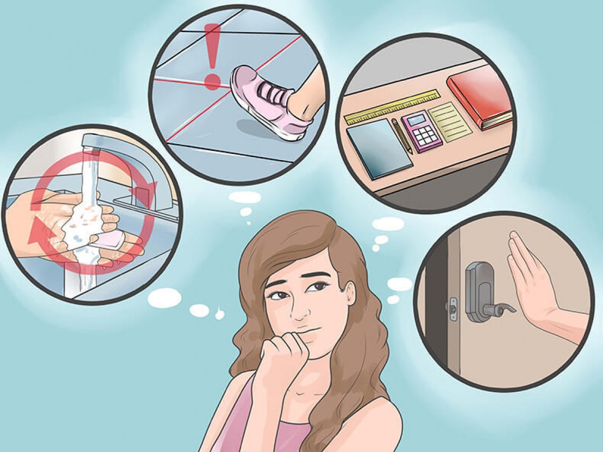
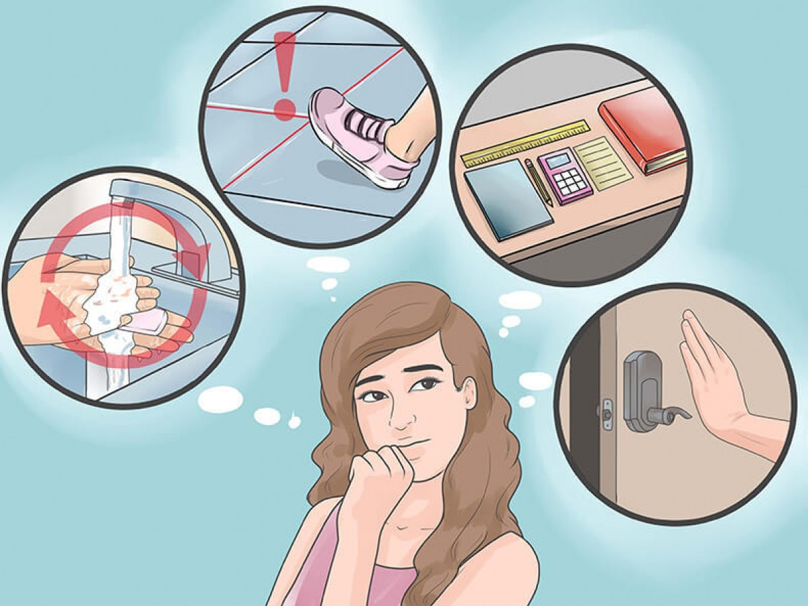

Доктор Мирон

Доктор Мирон

Обсессивно-компульсивное расстройство
Обсессивно-компульсивное расстройство—психическое расстройство, проявляющееся в непроизвольно возникающих навязчивых, мешающих или пугающих мыслях — обсессиях, а также в том, что человек постоянно и безуспешно пытается избавиться от вызванной этими мыслями тревоги с помощью столь же навязчивых и утомительных действий — компульсий.
Иногда отдельно выделяется обсессивное и отдельно компульсивное расстройства. Может иметь хронический, прогрессирующий или эпизодический характер.
В ходе аномального изменения высшей нервной деятельности происходит укоренение навязчивых мыслей, обсессий. Они не поддаются контролю, он не может избавиться от них волевым усилием. Обычно они крайне мучительны.
Для облегчения тревожности, общего состояния создаётся ритуал или даже система причудливых, странных ритуалов, называемых компульсиями. В отличие от страдающих шизофренией, индивиды, страдающие ОКР, полностью осознают болезненность своих переживаний, состояние их угнетает.
Обсессивно-компульсивное расстройство характеризуется развитием навязчивых мыслей, воспоминаний, фантазий, движений и действий, а также разнообразными патологическими страхами